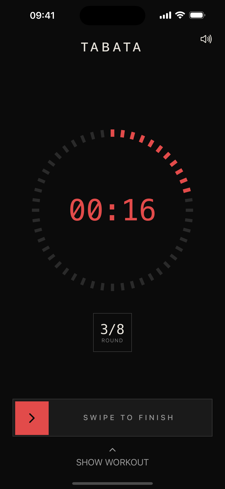
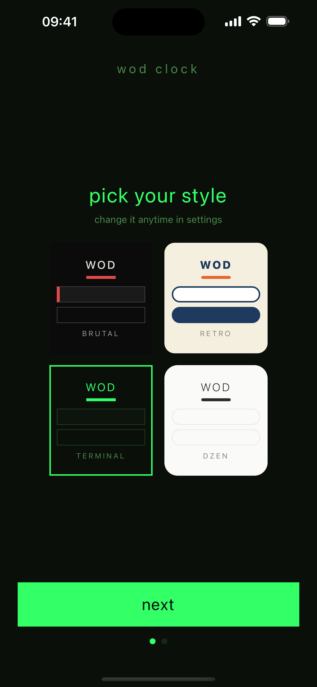
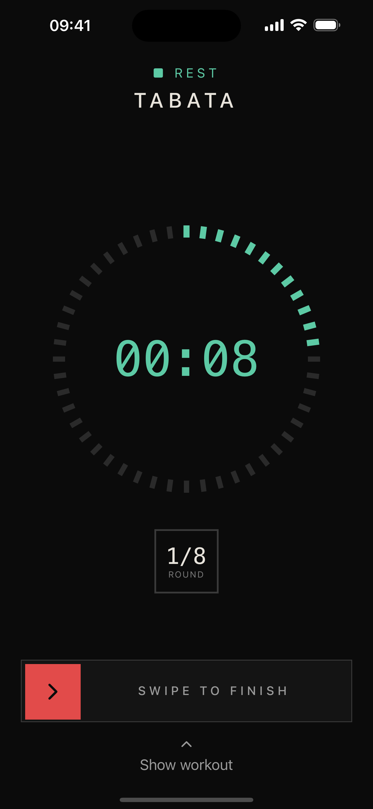
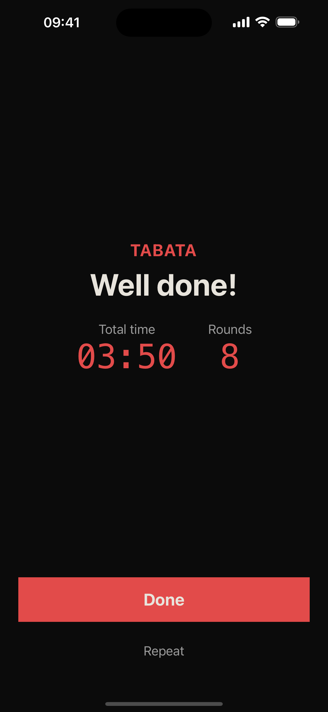
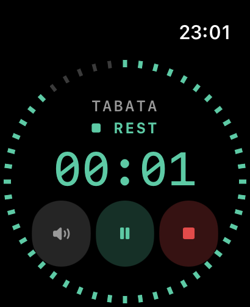
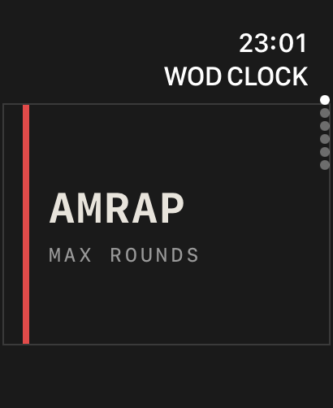

WOD CLOCK:
PERSONAL TIMER
A minimalist workout timer with a voice in your corner. Counts you in, announces rounds, calls the rest — you just train. Four visual styles, fully offline, on iPhone and Apple Watch.

PICK YOUR STYLE
The app ships with four looks — try them right here, the page follows your pick.
HOW IT WORKS

1Pick a style, set the timer
Choose one of four looks on first launch, then pick a timer and spin the wheels — rounds, work, rest. Save presets for your favourite workouts.

2Follow the voice
3‑2‑1 countdown, round announcements, half‑time, rest calls and a proper “Well done!” — in English or Ukrainian. The screen is readable from across the gym.

3See what you did
Every session lands in your log: result, round splits, notes. All stored on your device.
ON YOUR WRIST


A standalone Apple Watch app: the same timers, the same voice, plus haptics on every round. Leave the phone in the locker — the watch keeps the screen awake for the whole workout.
BUILT FOR THE GYM FLOOR
- Voice cues that coach youCountdown, rounds, half‑time, last round, rest, finish — the voice follows your app language.
- Lock screen & Dynamic IslandMinimize the app — the timer lives on your lock screen with pause and stop right there. Sounds keep playing in the background.
- Apple Watch appA standalone watch timer with the same sounds and haptic cues — leave the phone in the locker.
- MIX — build your own flowChain AMRAP, Tabata, work and rest blocks; repeat the whole flow. One timer runs it all.
- Partner / Relay2–4 athletes rotating by rounds with per‑partner voice callouts and separate results.
- Four styles, one timerBrutal, Retro Sport, Terminal or Dzen — pick the look during onboarding and switch it anytime. The lock-screen plaque and the watch follow along.
- Private by designFully offline. No account, no analytics, no tracking — your workouts never leave your device.
■ COMPLETELY FREE — EVERY TIMER, EVERY MODE. NO ADS, NO SUBSCRIPTIONS.